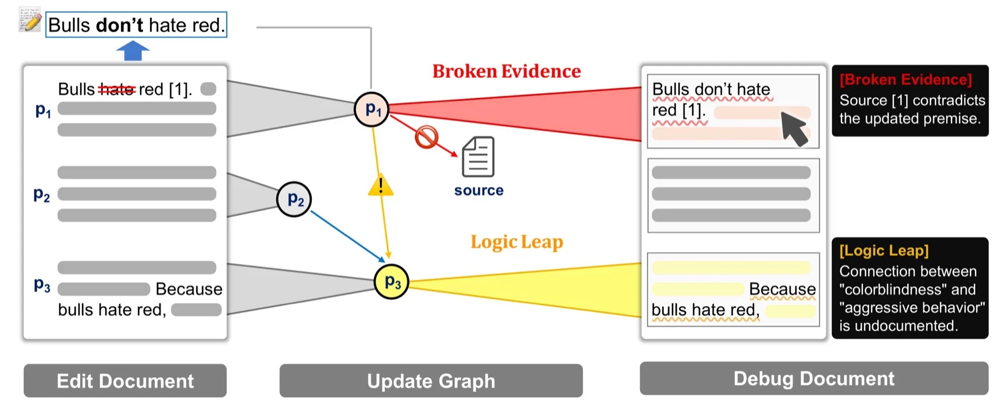

HCI × AI Researcher — SB Intuitions HCI × AI 研究者 — SB Intuitions
HitoshiMatsuyama 松山仁
I use data and AI to give structure to expert knowledge — so that people can understand it, check it, and act on it.
専門家の知識をデータとAIで構造化し、人が理解し、確かめ、活かせる形にする。
Across HCI research and data science — from ballroom dance and figure-skating judging to LLM-assisted writing.
HCI研究とデータサイエンスの両面から — 社交ダンスやフィギュアスケートの採点から、LLMによる文章作成支援まで。
NOW Presenting DocuDebug at UIST 2026 · Detroit · Nov 3 DocuDebug を UIST 2026 で発表 · デトロイト · 11月3日Selected work研究事例
Three projects at three scales — a document, a performance, a body. The interfaces below are re-created from the papers. Try them.
文書・演技・身体という3つのスケールの研究。各インタフェースは論文の図を元に再現したもので、実際に操作できます。
Re-created from Fig. 3 of the paper. The broadcast video is replaced with an illustration of the skater’s path.論文の Fig. 3 を再現。放送映像はスケーターの軌跡のイラストに置き換えています。
Simulated skeleton with accelerometer traces derived from its own joints.シミュレーションした骨格と、その関節から算出した加速度波形。
Publications業績
Peer-reviewed papers in HCI, ubiquitous computing, and sensing, plus domestic publications in Japanese.
HCI・ユビキタスコンピューティング・センシング分野の査読付き論文と、国内発表。
-
2026
DocuDebug: A Graph-Supported Interactive Editor for Verifying and Maintaining Internal Logical Consistency
Proceedings of the 39th Annual ACM Symposium on User Interface Software and Technology (UIST ’26) to appear採録・発表予定
-
2023
IRIS: Interpretable Rubric-Informed Segmentation for Action Quality Assessment
Proceedings of the 28th International Conference on Intelligent User Interfaces (IUI ’23), pp. 368–378
-
2022
Smartphone Localization with Solar-Powered BLE Beacons in Warehouse
HCI International 2022, LNCS, pp. 291–310
HCII ’22 -
2021
Deep Learning for Ballroom Dance Recognition: A Temporal and Trajectory-Aware Classification Model With Three-Dimensional Pose Estimation and Wearable Sensing
IEEE Sensors Journal, 21(22), pp. 25437–25448
IEEE Sens. J. -
2021
A Gaze-Based Unobstructive Information Selection by Context-Aware Moving UI in Mixed Reality
HCI International 2021, LNCS, pp. 301–315
HCII ’21 -
2020
A Basic Study on Ballroom Dance Figure Classification with LSTM Using Multi-modal Sensor
Activity and Behavior Computing (ABC 2020), Smart Innovation, Systems and Technologies, pp. 209–226
ABC ’20 -
2020
Nurse Care Activity Recognition Challenge: A Comparative Verification of Multiple Preprocessing Approaches
Adjunct Proceedings of UbiComp/ISWC ’20, pp. 414–418
UbiComp ’20 -
2020
社交ダンスの動作特性を考慮したマルチモーダルセンサによるダンスフィガー認識
情報処理学会論文誌, 61(10), pp. 1591–1604
IPSJ Journal論文誌 -
2020
マルチモーダル社交ダンス認識における従来手法と深層学習の比較評価
情報処理学会 研究報告 ユビキタスコンピューティングシステム（UBI）, No. 32, pp. 1–2
IPSJ UBI -
2019
Ballroom Dance Step Type Recognition by Random Forest Using Video and Wearable Sensor
Adjunct Proceedings of UbiComp/ISWC ’19, pp. 774–780
UbiComp ’19 -
2019
Hybrid Activity Recognition for Ballroom Dance Exercise using Video and Wearable Sensor
Joint 8th ICIEV and 3rd icIVPR 2019, pp. 112–117
ICIEV ’19 -
2018
Short Segment Random Forest with Post Processing Using Label Constraint for SHL Recognition Challenge
Adjunct Proceedings of UbiComp ’18, pp. 1636–1642
UbiComp ’18 -
—
ランダムフォレストとルールベース処理を用いた大規模スマートフォンデータに対する行動認識
HCGシンポジウム
HCG
Curriculum vitae経歴
Industry research and data science, an engineering doctorate, and a habit of entering (and winning) hackathons.
企業での研究とデータサイエンス、工学博士、そしてハッカソンやビジネスコンテストへの挑戦。
Experience職歴
-
Present現在
SB Intuitions Corp.
Human–Computer Interaction research, focusing on LLM-assisted writing.
LLMによる執筆支援を中心とした、Human–Computer Interaction の研究。
-
Previously前職
Recruit Co., Ltd.株式会社リクルート
Data scientist developing recommender systems — data analysis, model development, pipelines, KPIs, and online evaluation.
データサイエンティストとして推薦システムの開発に携わり、データ分析、モデル開発、パイプライン構築、KPI、オンライン評価などに従事。
-
2021 →
National University of Singaporeシンガポール国立大学
Research intern with Brian Y. Lim — explainable AI for action quality assessment.
研究インターン（Brian Y. Lim 研究室）— Action Quality Assessment のための説明可能AI。
Education学歴
-
2020–2022
Ph.D. in Engineering博士（工学）
Information and Communication Engineering, Nagoya University. Conferred Sept. 2022.
名古屋大学 大学院工学研究科 情報・通信工学専攻。2022年9月 学位取得。
-
2018–2020
M.Eng.修士（工学）
Information and Communication Engineering, Nagoya University.
名古屋大学 大学院工学研究科 情報・通信工学専攻。
-
2014–2018
B.Eng.学士（工学）
Information Engineering, Nagoya University.
名古屋大学 工学部 情報工学。
Awards受賞
- 2022 Outstanding Researcher — THERS Interdisciplinary Frontier Next Generation Researcher Program 優秀研究者 — THERS 学際フロンティア次世代研究者プログラム
- 2020 1st Prize — PwC Analytics Hackathon 優勝 — PwC Analytics Hackathon
- 2020 2nd Prize — Campus Venture Grand Prix (CVG), out of 260 teams 2位 — キャンパスベンチャーグランプリ（CVG）、260チーム中
- 2020 NEDO Prize — Tongali Business Contest NEDO賞 — Tongali ビジネスプランコンテスト
- 2020 SMBC Nikko Securities Prize — Tongali Business Contest SMBC日興証券賞 — Tongali ビジネスプランコンテスト
Programsプログラム・活動
- 2022THERS Interdisciplinary Frontier Next Generation ResearcherTHERS 学際フロンティア次世代研究者
- 2021Research internship, National University of Singaporeシンガポール国立大学 研究インターンシップ
- 2020Summer Data Science Program (online), North Carolina State Universityノースカロライナ州立大学 Summer Data Science Program（オンライン）
- 2018DII Collaborative Graduate Program for Accelerating Innovation in Future Electronics, MEXT & Nagoya University未来エレクトロニクス創成加速 DII 協働大学院プログラム（文部科学省・名古屋大学）
Skillsスキル
- Languages言語
- Japanese (native) · English — TOEIC 930, IELTS Academic 6.5日本語（母語）· 英語 — TOEIC 930、IELTS Academic 6.5
- Programmingプログラミング
- Python · C
- Methods手法
- Interactive system prototyping · controlled user studies · deep learning for pose & sensor data · explainable AIインタラクティブシステムのプロトタイピング · ユーザ実験 · 姿勢・センサデータの深層学習 · 説明可能AI